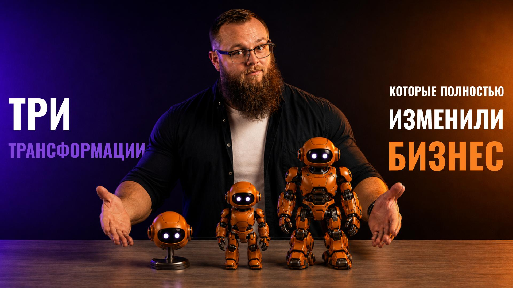

Три трансформации, которые полностью изменили бизнес
Agile, Digital и ИИ — и три уровня зрелости после них

Бизнес прошёл через три трансформации: Agile научил компании быстро меняться, Digital сделал их измеримыми, а ИИ добавил слой, который сам участвует в принятии решений. В этом материале — что именно перестраивала каждая из них, почему их нельзя перепрыгнуть, где проходит предел data-driven-модели и чем AI-Driven-компания отличается от AI-First и AI-Native.
Три трансформации бизнеса
Современная операционная модель формировалась последовательно. Условно можно выделить три крупные трансформации: Agile, Digital и ИИ. Каждая меняла свой слой: первая — то, как организованы люди, вторая — то, как организованы данные, третья — то, как принимаются решения.
👥 Agile-трансформация: способ организации людей
Компании начали переходить от жёсткой иерархии к кросс-функциональным командам, коротким циклам работы и постоянной обратной связи. Решения стали приниматься ближе к месту возникновения проблемы.
📊 Цифровая трансформация: способ организации данных
Процессы начали переноситься в информационные системы, каждое действие стало оставлять цифровой след, а управление стало опираться на измерения, аналитику и единые платформы.
🧠 ИИ-трансформация: способ организации решений
Если на цифровом этапе данные помогают человеку, то на интеллектуальном этапе система сама анализирует их, формирует варианты и выполняет часть действий.
Эти трансформации не отменяют друг друга. Невозможно устойчиво внедрить ИИ в компанию, где процессы не определены, команды не умеют адаптироваться, данные фрагментированы, а решения не измеряются. Интеллектуальный слой опирается на результаты предыдущих этапов.
Agile дал бизнесу гибкость, Digital — наблюдаемость, ИИ — способность масштабировать мышление и исполнение. Вместе они формируют переход от механической организации к адаптивной интеллектуальной системе.
Поэтому ИИ-трансформация — не технологический проект одного подразделения. Она затрагивает структуру взаимодействий, данные, ответственность, роли, метрики и культуру. В противном случае компания получает отдельные удобные инструменты, но её операционная модель остаётся прежней.
Agile: от иерархии к адаптивности
Классическая организация строилась как вертикальная пирамида. Решения принимались наверху, задачи передавались вниз, а информация о результатах поднималась обратно. Такая модель обеспечивала контроль в стабильной среде, но становилась медленной, когда рынок начинал быстро меняться.
Каждое нововведение требовало согласований между подразделениями. Ответственность была разделена по функциям, поэтому результат зависел от длинной цепочки участников. Чем больше становилась компания, тем сложнее ей было адаптироваться.
Agile предложил иную логику. Вместо управления исключительно через функциональные вертикали появились кросс-функциональные команды, объединённые вокруг продукта, клиента или результата. Работа стала итерационной: команда создаёт небольшой результат, получает обратную связь, проверяет гипотезу и корректирует дальнейшие действия.
Это привело к развитию матричных структур, в которых специалисты сохраняют профессиональную принадлежность, но работают в продуктовых или проектных командах. Решения принимаются ближе к данным и пользователю, а ответственность становится более распределённой.
Главное достижение Agile заключается не в ритуалах и встречах, а в переходе от контроля к адаптивности. Компания начинает воспринимать изменение не как исключение, а как нормальное состояние.
Для ИИ-трансформации это особенно важно. Агентов невозможно спроектировать один раз и считать задачу завершённой. Их нужно тестировать, получать обратную связь, улучшать и адаптировать к новым данным.
Организация, не умеющая работать итерациями, будет слишком медленно развивать интеллектуальные системы. Agile подготовил компании к следующему этапу: если работа организована как сеть команд и коротких циклов, её легче оцифровать, измерить и превратить в поток данных.
Digital: от процессов к данным
Цифровая трансформация началась с оцифровки операций. Продажи переместились в CRM, ресурсы — в ERP, коммуникации — в корпоративные платформы, а управленческие показатели — в BI-системы.
Каждое действие стало оставлять цифровой след: звонок, транзакция, изменение статуса, обращение клиента, выполнение задачи. Благодаря этому компания получила возможность измерять процессы, сравнивать результаты и принимать решения на основе фактов.
Данные стали стратегическим активом. Однако их ценность возникает не из самого факта хранения. Они должны быть качественными, связанными, доступными и понятными. Фрагментированные базы и противоречивые показатели создают лишь иллюзию цифровой зрелости.
Цифровой этап также показал важное ограничение, описываемое законом Конвея: программные системы организации повторяют структуру её коммуникаций. Если подразделения изолированы, то и данные оказываются разделены; если решение требует длинной цепочки согласований, то программная архитектура обычно воспроизводит ту же зависимость.
Поэтому цифровая трансформация не может ограничиваться внедрением новых систем. Необходимо менять взаимодействие между функциями, стандарты данных и ответственность за процесс целиком.
Даже зрелая цифровая компания всё ещё зависит от человеческой интерпретации. Дашборд показывает отклонение, но не принимает решение. Отчёт содержит факты, но не запускает действие. Чем больше данных, тем выше нагрузка на внимание руководителей и аналитиков.
Именно здесь появляется предел data-driven-модели. Данные сделали бизнес наблюдаемым, но сами по себе не превратили наблюдение в действие. Следующий этап должен соединить данные с интеллектом.
ИИ: от данных к решениям
ИИ-трансформация начинается в тот момент, когда система перестаёт только показывать данные и начинает участвовать в принятии решений.
В цифровой компании человек получает отчёт, интерпретирует показатели и выбирает действие. В интеллектуальной компании часть этого цикла выполняет агент: обнаруживает событие, связывает его с контекстом, оценивает варианты, предлагает решение или действует самостоятельно в пределах установленных правил.
Это переход от data-driven к intelligence-driven-бизнесу. Данные остаются основой, но поверх них появляется слой машинного интеллекта. Он способен работать непрерывно, обрабатывать больше сигналов и учитывать больше взаимосвязей, чем отдельный человек.
Например, цифровая система показывает снижение конверсии. Интеллектуальная система определяет сегменты, в которых возникло отклонение, связывает его с изменениями трафика и предложения, предлагает гипотезы, запускает эксперимент и отслеживает результат.
При этом качество решений зависит от качества данных, модели и архитектуры управления. ИИ не устраняет неопределённость и не освобождает компанию от ответственности. Он масштабирует как сильные, так и слабые стороны системы. Если данные неверны, цели противоречивы, а процесс плохо определён, агент будет быстрее воспроизводить эти проблемы.
Поэтому интеллектуальная трансформация требует формализации: нужно определить цель процесса, метрики, допустимые действия, границы автономности, правила эскалации и владельца результата.
Главное изменение заключается в скорости обратной связи. Компания начинает не только наблюдать за собой, но и реагировать почти в реальном времени. Так возникает предпосылка для самообучающейся организации.
AI-Driven, AI-First и AI-Native
Зрелость компании в работе с искусственным интеллектом можно представить как движение через три модели: AI-Driven, AI-First и AI-Native.
🧰 AI-Driven-компания
Использует ИИ как инструмент повышения эффективности. Модели помогают анализировать данные, создавать материалы, прогнозировать показатели и автоматизировать отдельные операции. Однако архитектура бизнеса остаётся в основном человеческой, а ключевые решения принимает человек.
⚙️ AI-First-компания
Строит процессы с учётом машинного интеллекта. Агенты становятся частью операционной модели, получают доступ к данным и инструментам, выполняют задачи и взаимодействуют друг с другом. Человек задаёт цели, контролирует качество и отвечает за развитие системы.
🧬 AI-Native-компания
Идёт ещё дальше: её продукт, технология и бизнес-модель изначально невозможны без искусственного интеллекта. ИИ здесь не поддерживает существующий бизнес, а является ядром создаваемой ценности. Это могут быть платформы моделей, агентные продукты, интеллектуальные среды или сервисы, полностью построенные вокруг автоматизированного исполнения.
Эти категории не являются строгой лестницей, по которой обязана пройти каждая организация. Существующий банк или промышленная компания может стать зрелой AI-First-организацией, но не обязана превращать сам ИИ в свой основной продукт. Стартап, напротив, может с первого дня быть AI-Native.
Такое различие помогает не подменять стратегию модными терминами. Уровень зрелости определяется не заявлениями, а тем, какую роль интеллект реально играет в создании ценности.
Что важно запомнить
Три трансформации — это слои, а не эпохи
Agile организует людей, Digital — данные, ИИ — решения. Верхний слой держится на нижних.
Agile нужен не ради ритуалов
Агента нельзя сдать и забыть: без привычки работать итерациями его некому доводить.
Системы повторяют структуру общения
Закон Конвея: изолированные отделы дают разрозненные данные, а согласования — зависимости в архитектуре.
Данные растут, внимание — нет
Здесь и проходит предел data-driven: наблюдаемость выросла, а превращение наблюдения в действие — нет.
Уровень зрелости выбирают под задачу
AI-Driven, AI-First и AI-Native — не ступени обязательной лестницы, а разные ответы на разные цели.
которую интеллект реально играет в создании ценности.
Дальше — практика
Эта статья собрана из первой лекции курса по автоматизации бизнес-процессов с ИИ-агентами. Дальше — поиск процессов для автоматизации, описание AS-IS, проектирование TO-BE, разработка агента и запуск в реальном бизнесе.
От диагностики бизнеса
— до работающего агента.